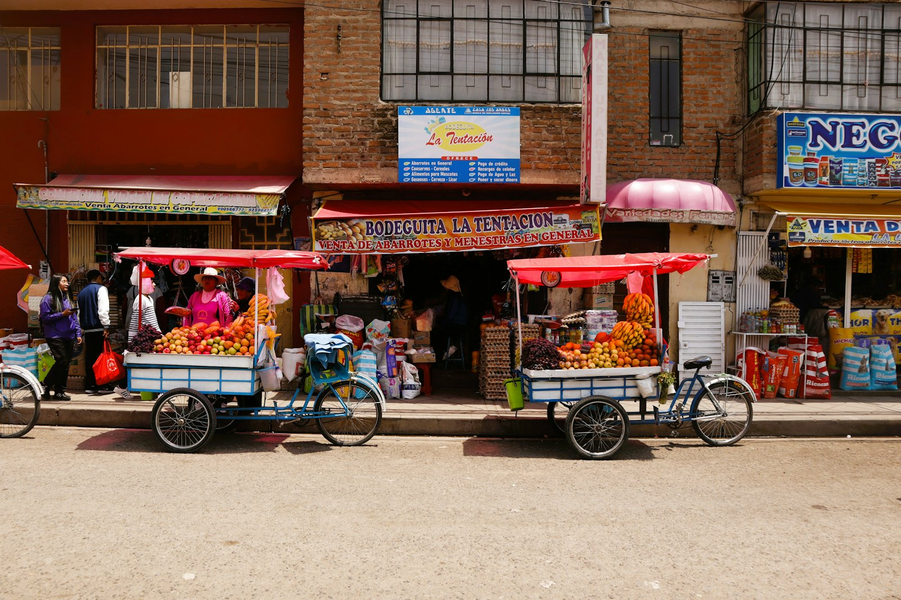

Full DayAntioquía
Cieneguilla · Huaycán de Cieneguilla · Nieve Nieve · Sisicaya · Cochahuayco · Espíritu Santo · Amancaes
A day through the Lurín valley: Cieneguilla's main square, with its "wall of love" and colonial church, and a typical regional breakfast; the Inca site of Huaycán de Cieneguilla — an Ychsma settlement on the old pilgrimage route from Pachacamac to the Pariacaca mountain deity, with adobe structures, friezes and ramps; the village of Nieve Nieve and its local crafts; the ghost village of Sisicaya, with its Franciscan church and colonial-era legends; Cochahuayco, the "quince paradise", with local nectars and preserves; a lunch of regional dishes; Espíritu Santo, with its colourful painted streets and church; and the Amancaes viewpoint, looking out over the farmland and the town of Antioquía in Huarochirí.
Departures Friday to Sunday.